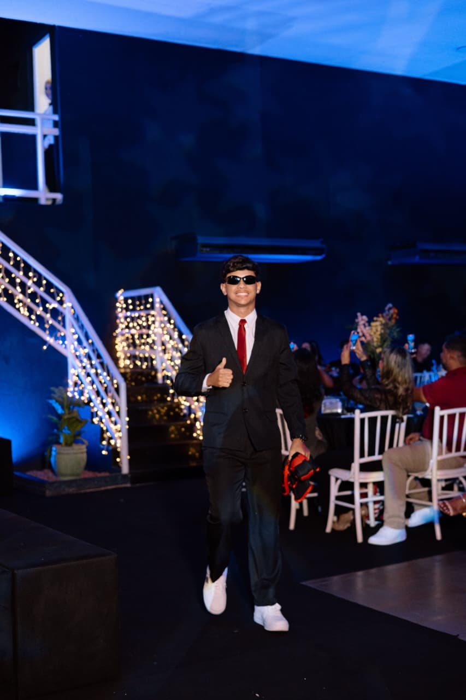

Python
Lógica e programação
LINGUAGEMPORTFÓLIO • PLAYER 001
Explorando o mundo da tecnologia, aprendendo novas ferramentas e transformando ideias em projetos.

Prazer, Arthur! 👋
Sou estudante de Informática no CEET Vasco Coutinho, atualmente no segundo módulo. Tenho interesse em programação, desenvolvimento web, criação de sistemas e banco de dados.
Assim como em um mundo aberto, gosto de explorar possibilidades, enfrentar desafios e construir soluções passo a passo. Estou no começo da minha jornada profissional e sigo ampliando meus conhecimentos por meio de estudos e projetos práticos.
Ferramentas e tecnologias que fazem parte da minha jornada de aprendizado.
Lógica e programação
LINGUAGEMProgramação e sistemas
LINGUAGEMFundamentos de programação
LINGUAGEMInteratividade web
LINGUAGEMEstrutura de páginas
WEBEstilo e responsividade
WEBBanco de dados e SQL
DATABASEVersionamento de projetos
FERRAMENTA* Tecnologias apresentadas como conhecimentos em estudo e prática; o nível de domínio varia conforme cada ferramenta.
Site institucional desenvolvido para um bar e restaurante, com identidade visual inspirada nos tradicionais pontos de ônibus do Espírito Santo, trazendo cores e elementos característicos do transporte capixaba em um design moderno e criativo.
CSS HTML Acessar projeto →Site institucional da Funerária Sonho Vivo, com homenagens audiovisuais e preservação de memórias.
HTML CSS JAVASCRIPT Acessar projeto →Tem uma oportunidade, ideia ou projeto? Entre em contato comigo!
arthuralvesmachado00@gmail.com